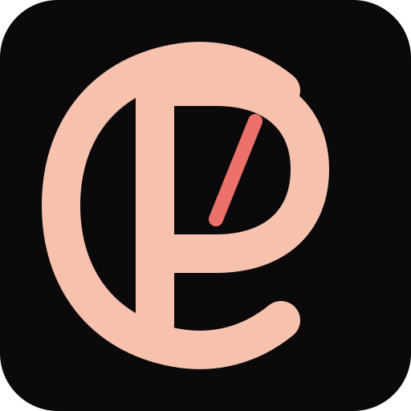
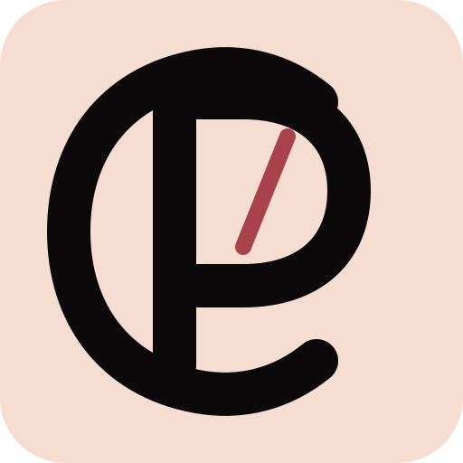

Signature horizontale candidate

Peach & Claw
Signature sur papier

Peach & Claw
Emblème maître
Monogramme secondaire
Épreuve des petites tailles
GO : nous figeons cette famille puis vectorisons définitivement le logotype. NO-GO : indique uniquement l’élément qui bloque — emblème, monogramme ou texte.